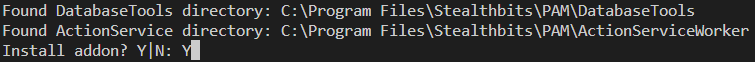
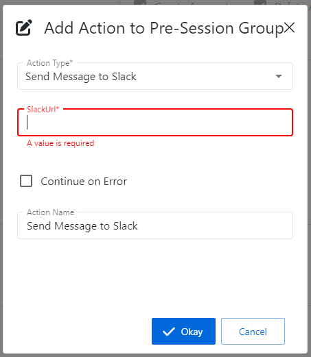

Summary
This article describes how to set up a custom "Send Slack Message" action step in Netwrix Privilege Secure, which can then be added to activities.Instructions
Preparing Your Slack App
A custom Slack application must be created for this integration.
1. In Slack, navigate to the "Your Apps" page: https://api.slack.com/apps/
2. Click "Create New App"
3. Select "From an app manifest" and paste the following YAML into the provided field:
display_information: name: NPS App settings: org_deploy_enabled: false socket_mode_enabled: false is_hosted: false token_rotation_enabled: false
4. On the "Your Apps" page, select "Incoming Webhooks".
5. Under "Activate Incoming Webhooks", click "Add New Webhook to Workspace".
6. Search for the channel you would like NPS to message. Click "Allow". Copy the provided URL.
Importing the Action Step
1. Download the Send-SlackMessage.zip archive to the SbPAM server.2. Extract the archive, which contains a README file, an ActionTemplates directory, and an Install-Addon.ps1 script file. Right-click Install-Addon.ps1 and select "Run with PowerShell".
3. When prompted, select "Y" to proceed.

4. The PowerShell window should quickly execute the script and close.
5. Log in to the SbPAM console. (If SbPAM was already open, be sure to refresh the console.)
6. In SbPAM, navigate to Activities, select an Activity, and click the green plus sign in either the Pre-Session or Post-Session. Note that the "Send Message to Slack" activity step is now available.
7. Provide the URL from step 6 of Preparing Your Slack App when configuring the action step.
